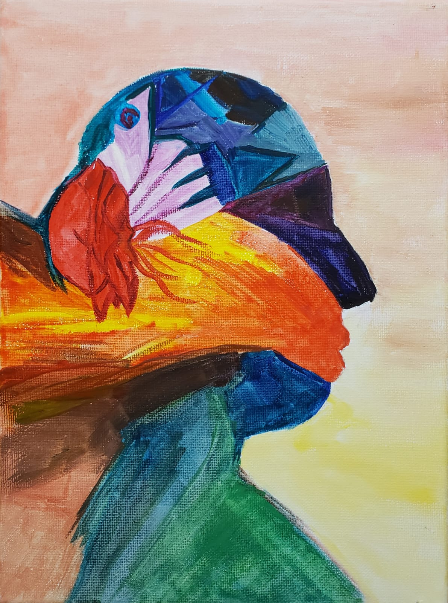
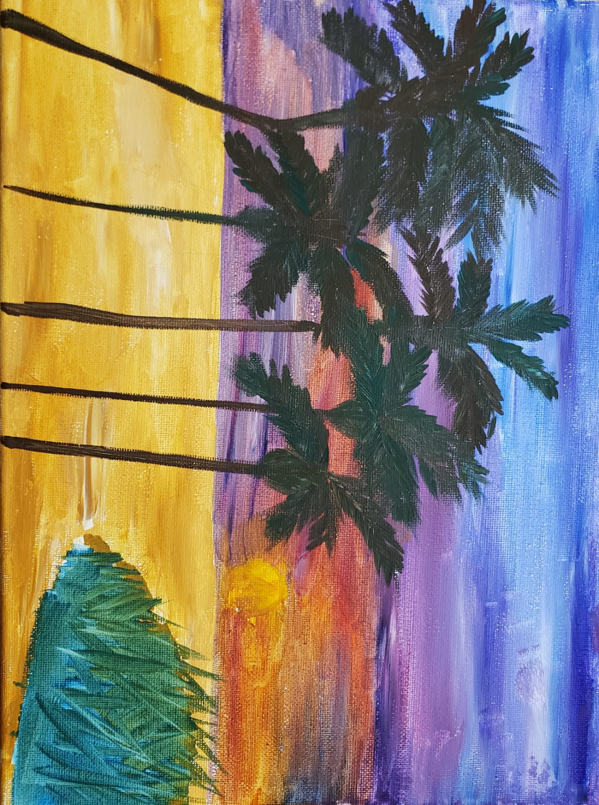
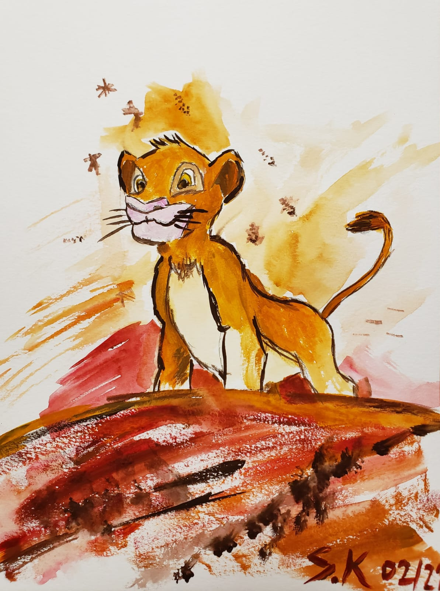
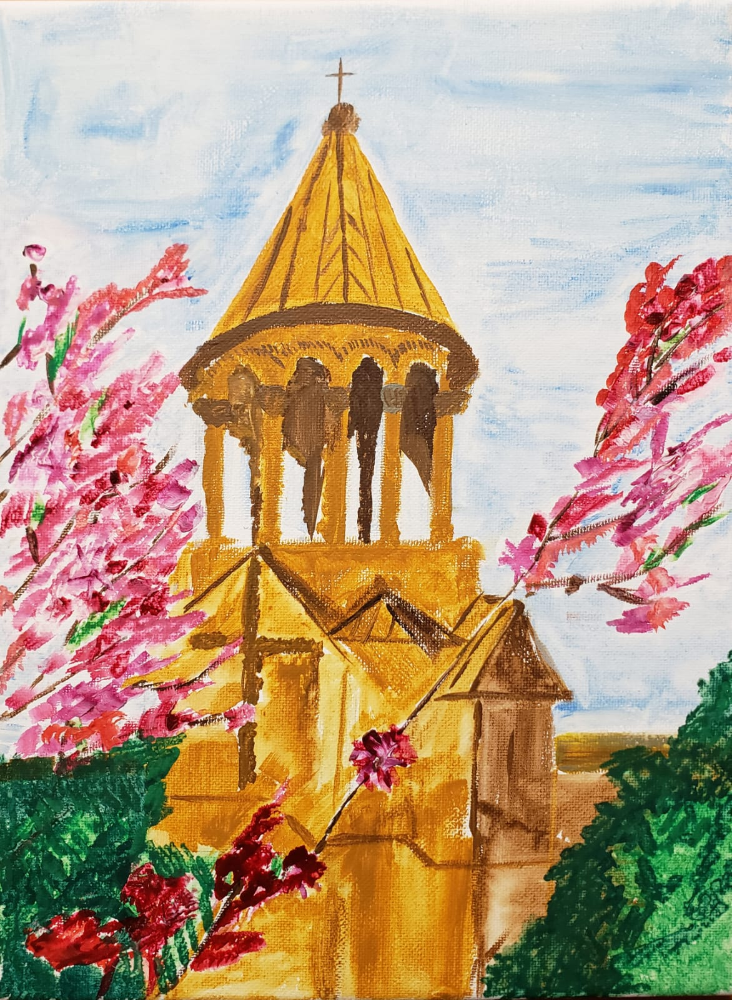

	<div class="my paintings">
		
		<p> In my free time, I like painting and cycling. 
			Here are some of my paintings: </p>
		<figure>
		
			<figcaption align = "inline"><b>Brain, 2019</b></figcaption>
		</figure>
		<figure>	
		
			<figcaption align = "inline"><b>Tropical, 2019</b></figcaption>
		</figure>
		
		<figure>
    		
			<figcaption align = "inline"><b>Goals, 2019</b></figcaption>
		</figure>
		
		<figure>
		
			<figcaption align = "inline"><b>Noravank Monastery, Armenia, 2019</b></figcaption>	
		</figure>	
  
  </div>
